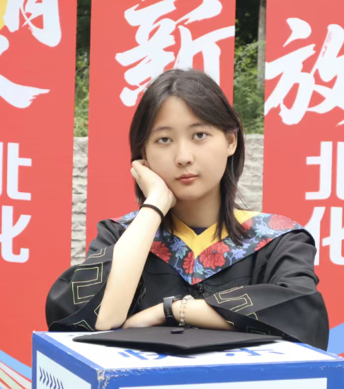
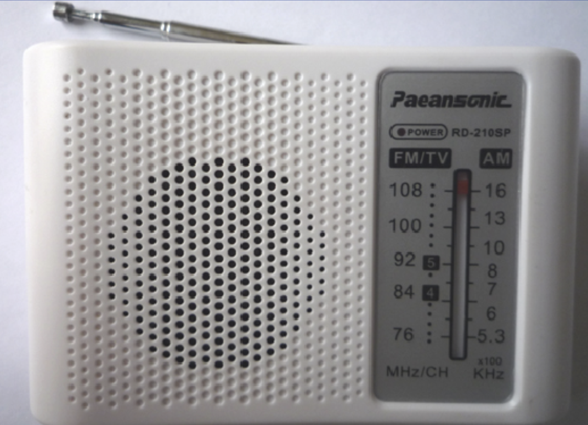
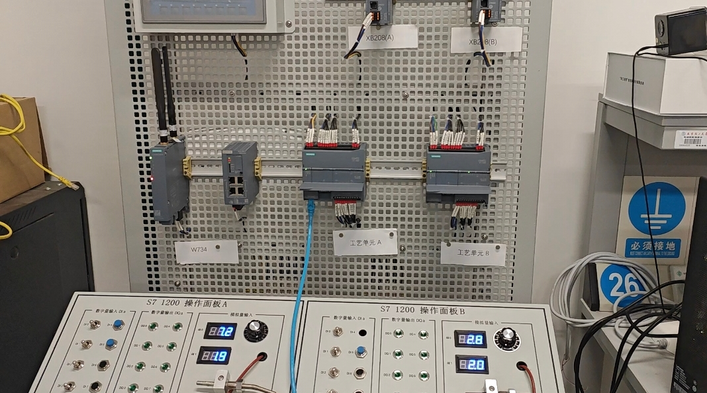
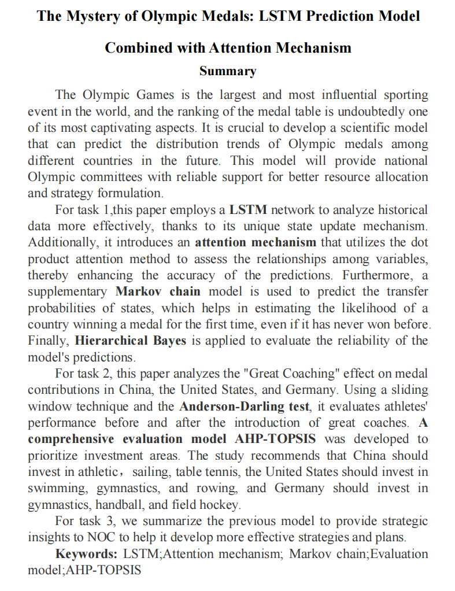
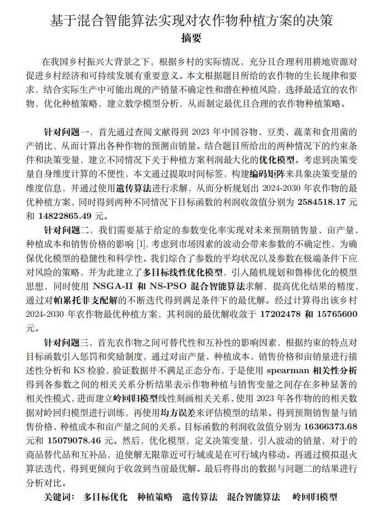

|
Dailin Cun I'm a student majored in Electronic Science and Technology at Beijing University of Chemical Technology (BUCT) in Beijing, China. I am currently pursuing an MSc in Microelectronics and Integrated Circuits at The Chinese University of Hong Kong (CUHK). Familiar with Verilog RTL design, testbench development, and waveform debugging in ModelSim. Experienced in writing synthesizable code and performing functional/timing simulations. Email / CV / GitHub |
 |
{kind=link}
Main Courses
Beijing University of Chemical Technology (BUCT) — B.Eng in Electronic Science and Technology
The Chinese University of Hong Kong (CUHK) — M.Sc. in Microelectronics and Integrated Circuits |
Academic Projects |

|
Portable Heart Rate Monitoring System Based on STC89C52 Microcontroller
Research Assistant, Advisor: Lin Chengyou, Beijing University of Chemical Technology, 2025.05–2025.07 This project presents the design and implementation of a portable heart rate monitoring system based on the STC89C52 microcontroller. The system uses an ST188 reflective optical sensor to acquire pulse signals and employs an analog front-end consisting of pre-amplification and active bandpass filtering to improve signal quality. Heart rate is calculated in real time using firmware developed in C with Keil, while abnormal heart rates trigger an audible buzzer alarm. The hardware prototype includes an LCD1602 display, a custom-designed PCB, and has been validated through both simulation and physical testing. |

|
NPN Transistor Output Characteristic Curve Measurement System
Team Leader, Beijing University of Chemical Technology, 2024.08–2024.09 This project presents the design, simulation, and hardware implementation of an automatic NPN transistor output characteristic curve measurement system. The system employs a time-base scanning circuit, a stepped base-bias generation circuit, and a differential signal conditioning circuit to automatically obtain the output characteristic curves of an NPN transistor. The circuit was first designed and verified in Multisim, and then implemented on a breadboard using common analog and digital components, including the LM555 timer, LM324 operational amplifier, and 74LS161 synchronous counter. Experimental waveforms, including the triangular scanning signal, stepped base-bias voltage, and transistor output characteristic curves, were observed and analyzed using an oscilloscope in X–Y mode. The measured results showed good agreement with theoretical analysis, validating the feasibility of the proposed design. |
|
 |
JC210SP Radio Receiver Assembly and Debugging
Personal Project, Beijing University of Chemical Technology, 2024.10–2024.11 This project involved the complete assembly, soldering, and debugging of a JC210SP AM/FM radio receiver as part of an undergraduate electronics laboratory course. The work covered the entire process from electronic component identification and PCB assembly to system-level debugging and functional verification. During the project, soldering quality was carefully controlled to ensure reliable electrical connections, and the completed radio successfully achieved stable radio signal reception and audio playback. |
Main Academic AwardsI have received multiple awards in national-level competitions, demonstrating strong skills in system-level design, digital logic implementation, and cross-functional teamwork. |
|
 |
“Siemens Cup” China Intelligent Manufacturing Challenge (CIMC) 2024
Dailin Cun, Leyan Cai, Jian Kang, 2nd Prize in the Innovative Design of Industrial Network Structures and Functions category, 2024 As part of the "Siemens Cup" China Intelligent Manufacturing Challenge (CIMC), our team developed an industrial communication network according to the competition specifications for an intelligent manufacturing scenario. The project required the design, configuration, and validation of a complete industrial network to ensure reliable communication among production, control, and monitoring systems. My primary responsibilities included VLAN planning, hierarchical IP address allocation, firewall policy configuration, and industrial network deployment. I also assisted with PLC communication debugging and performed network traffic analysis using Wireshark to evaluate communication performance and support system debugging. The project was awarded the Second Prize (North China Division) in the Innovative Design of Industrial Network Structures and Functions category. |
{kind=link}
|
 |
National College Student Mathematical Contest in Modeling (China)
Dailin Cun, Kai Zhang, Linyou Yang Honorable Mention in ICM (The Interdisciplinary Contest in Modeling), 2025 As part of the Mathematical Contest in Modeling / Interdisciplinary Contest in Modeling (MCM/ICM), our team developed a hybrid machine learning framework to predict medal distributions for the 2028 Los Angeles Olympic Games using historical Olympic data (1896–2024). The framework integrated LSTM neural networks, an attention mechanism, and Markov chains to model temporal dependencies and improve prediction robustness. My primary responsibilities included data preprocessing, prediction result visualization, uncertainty analysis, and technical paper writing. I also applied a hierarchical Bayesian approach to estimate confidence intervals and evaluate the reliability of the prediction results. The project received the Honorable Mention (International Award). |
|
 |
National College Student Mathematical Contest in Modeling (China)
Dailin Cun, Kai Zhang, Linyou Yang 1st Prize of Beijing Municipality in CUMCM (China Undergraduate Mathematical Contest in Modeling), 2024 During National College Student Mathematical Contest in Modeling (China), our team developed an optimization model for crop planting strategies under multi-variable and multi-constraint conditions. The project aimed to maximize agricultural benefits while considering practical constraints such as land area, crop rotation requirements, seasonal planting restrictions, planting costs, and market demand. The optimization framework combined Genetic Algorithms (GA) and Non-dominated Sorting Genetic Algorithm II (NSGA-II) to explore optimal planting strategies under uncertainty. The optimization results were further analyzed and visualized to support decision-making and evaluate the effectiveness of different planting strategies. The project was awarded the First Prize (Beijing Division). |
{kind=link}
Other AwardsI also received additional honors in mathematical modeling and robotics competitions. Asia and Pacific Mathematical Contest in Modeling (APMCM) — National 3rd PrizeDailin Cun, Kai Zhang, Linyou Yang Beijing University of Chemical Technology Home Robot Service Competition — University 3rd Place Government Scholarship (Third Class), 2023–2024 Academic Year Individual Award Quality Development Competition Scholarship, 2024 Individual Award |
{kind=link}
{kind=link}
Co-curricular Activities |
|
Served as a student leader of the Alumni Volunteer Association at Beijing University of Chemical Technology, responsible for planning and organizing alumni engagement activities. Coordinated the university's Alumni Homecoming Day, guided over 200 alumni on campus tours, and assisted in event organization and on-site coordination. Produced official WeChat articles and promotional content to document and publicize alumni activities, helping strengthen communication between the university and its alumni community while developing leadership, teamwork, and organizational skills. |
Amateur Music Production |
Self-taught FL Studio for music composition and arrangement. Created and published original music works on Bilibili, with total views exceeding 150,000+. |